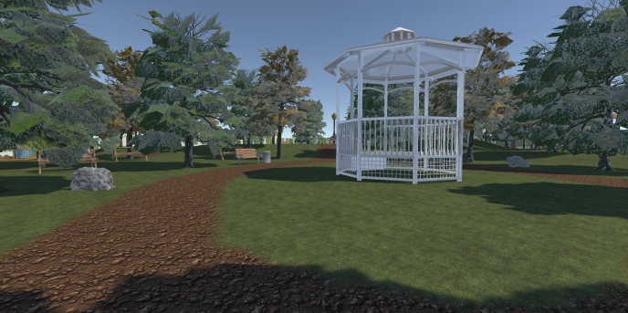
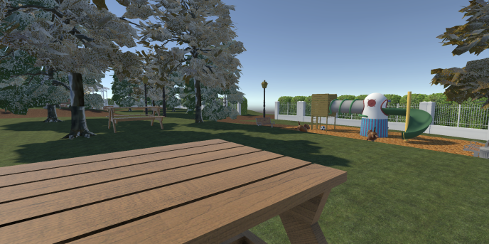
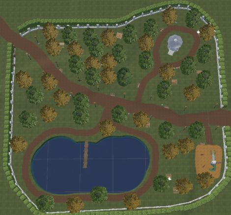

Le projet
L'objectif est d'aider des patients ayant subi un AVC à travailler leur rééducation neurologique dans un environnement virtuel, plus motivant qu'un exercice sur papier.
Le développement a été mené par une équipe de 20 personnes, réparties en cinq groupes : Ressources, UI, UX, Datas et LIV. Je faisais partie du groupe Ressources, en charge des environnements et des assets 3D.
Ma contribution : la map Parc
J'ai réalisé la création complète de la map Parc : agencement des chemins, décor, éclairage et placement des zones interactives. Ces zones permettent de travailler le repérage visuel et le pointage d'objets en VR.



Une difficulté progressive
Les exercices sont découpés en trois niveaux, pour s'adapter aux capacités de chaque patient :
Ce que j'en retiens
- Concevoir un environnement 3D pour un vrai public, avec des contraintes de confort en VR.
- Travailler à 20 avec Git et Jira : branches, tâches, coordination entre groupes.
- Optimiser des assets (Blender, Asset Store, Sketchfab) pour garder de bonnes performances.